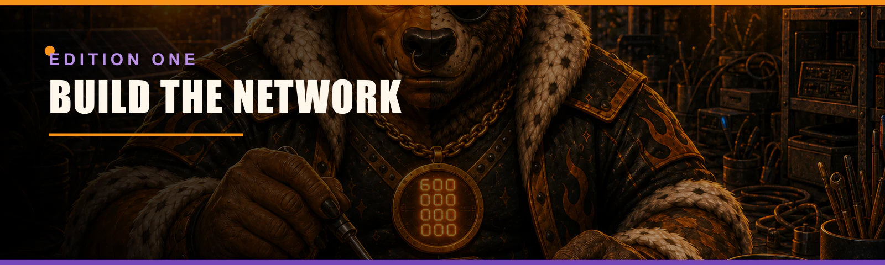
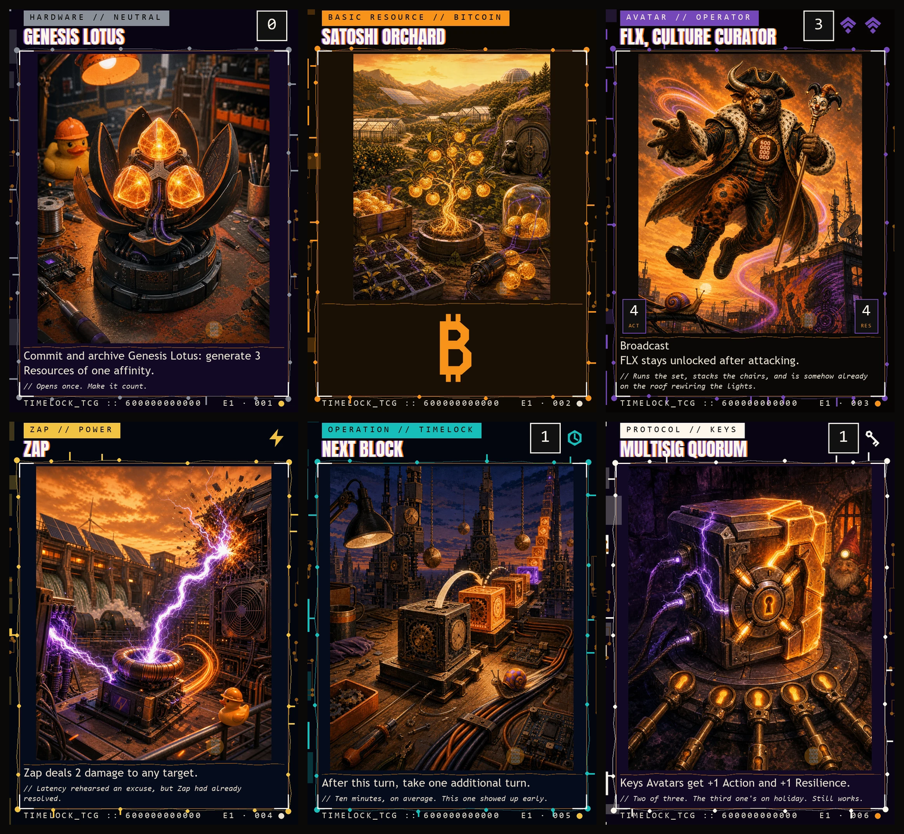
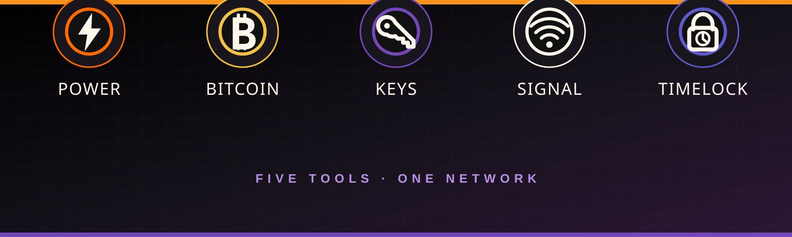
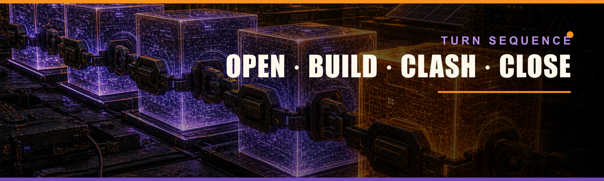
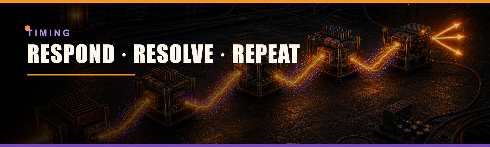
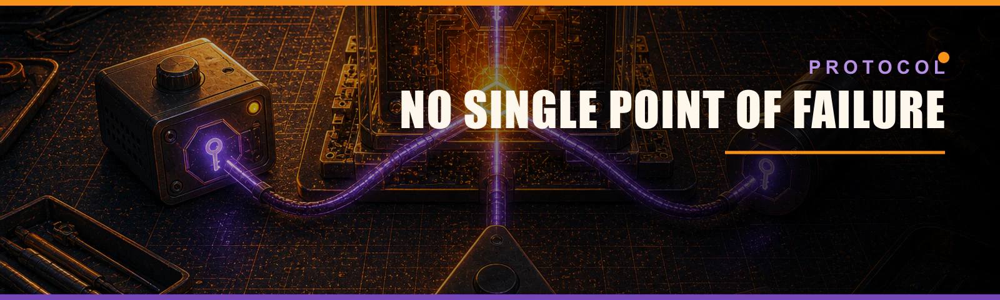

Build the network. Protect your uptime. Make every action count.
Edition One is a two-player trading card game about open systems, resilient communities and positive cypherpunk culture. Players deploy Avatars, Hardware and Protocols, route fast Zaps, and commit five kinds of Resources to keep their side of the Network alive.
The first rules profile deliberately preserves the strategic shape of first-generation dueling card games: 20 starting Uptime, seven cards in the opening Wallet, forty-card minimum Stacks, one Resource play each turn, classic resource burn and unrestricted card counts. Timing is expressed through one deterministic last-in-first-out Queue so the same rules can be enforced by a web app.
Edition One principle: cards can bend these rules. When a card and this rulebook disagree, the card wins for the specific thing it changes.

1. Fast start
You can learn the core loop in one page.
- Each player brings a Stack of at least 40 cards and begins at 20 Uptime.
- Shuffle, then draw seven cards into your Wallet.
- Randomly choose the first player. The first player draws on turn one.
- On your turn, Unlock, handle Maintenance, then Draw.
- During Build, play up to one Resource from your Wallet.
- Commit Resources to generate Power, Bitcoin, Keys, Signal or Timelock.
- Spend those Resources to play Avatars, Hardware, Protocols and Operations.
- Attack with Avatars during Clash. Unblocked Avatars damage the opposing player.
- Play Zaps and activated abilities whenever you have priority.
- Win when the opponent reaches 0 Uptime or cannot draw a required card.
The table in one glance
| Your private information | Shared information | Completed information |
|---|---|---|
| Stack — face-down draw pile | Network — cards in play | Archive — used and destroyed cards |
| Wallet — cards in hand | Queue — actions waiting to resolve | Cold Storage — cards outside the game |
2. The game contract
2.1 Players
The E1 Classic Profile is written for exactly two players. A player may concede at any time. A concession takes effect immediately and cannot be answered.
2.2 The objective
You win the game when any of these conditions is true:
- Your opponent has 0 or less Uptime.
- Your opponent must draw a card but their Stack is empty.
- A card says that you win.
- Your opponent concedes.
If both players would lose during the same state check, the game is a draw.
2.3 Uptime
Each player begins with 20 Uptime. Damage reduces Uptime. Healing or other effects may raise it above 20. Uptime is public information.
2.4 Cards over rules
A card changes only what it says it changes. Follow as much of an instruction as possible. The word cannot wins over can unless a card explicitly says otherwise.
Protocol notes, flavor text, artist credits and collector information never affect play.
3. What is on a card
Every playable card has the following rules-facing fields.
| Field | Meaning |
|---|---|
| Name | The card's identity. Two cards with the same name are the same card for effects that check names. |
| Cost | Resources required to play the card. |
| Type line | One or more card types, followed by optional subtypes. |
| Affinity | Power, Bitcoin, Keys, Signal, Timelock or neutral. |
| Rules | Instructions and abilities that affect the game. |
| Action / Resilience | Combat values shown only on Avatars. |
| Set code | Edition and collector identity; no gameplay effect. |
| Simple Guide | A plain-language explanation of the card's practical job; no gameplay effect. |
| Protocol note | A factual learning note; no gameplay effect. |

3.1 Affinity
A non-Resource card's affinity is normally defined by the specific Resource symbols in its cost. A Resource card has the affinity of its Resource subtype. A card with neither a specific Resource symbol nor a Resource subtype is neutral. An effect may add, remove or change an affinity.
3.2 Action and Resilience
An Avatar's first stat is Action: the damage it deals in combat. Its second stat is Resilience: how much marked damage it can withstand during a turn.
For example, a 4/4 Avatar has 4 Action and 4 Resilience.
3.3 Owner and controller
The owner of a card is the player who started the game with it. The controller is the player currently making its decisions. Cards begin under their owner's control, but effects can change control. Ownership never changes during a game.
4. The five Resources
The five Resources are both spendable energy and philosophical affinities. None is good or evil. Each represents a useful tool with a characteristic strength and tradeoff.

Power

Energy, mining, speed and direct action. Power solves the immediate problem, sometimes at a cost.
Bitcoin

Scarcity, saving, settlement and resilient growth. Bitcoin compounds patient investment into durable advantage.
Keys

Custody, privacy, signatures and deliberate risk. Keys trade comfort for agency and turn access into responsibility.
Signal

Identity, culture, coordination and protection. Signal makes people legible to one another without requiring a central platform.
Timelock

Sequencing, planning, verification and control. Timelock delays the easy move to preserve the stronger move.
4.1 Affinity wheel
The E1 card pool preserves a five-part relationship wheel.
| Affinity | Natural allies | Productive tensions |
|---|---|---|
| Signal | Timelock, Bitcoin | Keys, Power |
| Timelock | Signal, Keys | Power, Bitcoin |
| Keys | Timelock, Power | Signal, Bitcoin |
| Power | Keys, Bitcoin | Signal, Timelock |
| Bitcoin | Power, Signal | Timelock, Keys |
These relationships guide card design; they do not create a rule by themselves.
5. Card types
5.1 Resource
Resources enter the Network and normally generate one Resource of their subtype when committed. Playing a Resource is a special action, not an item on the Queue.
You may play one Resource from your Wallet during either Build phase of your turn while the Queue is empty. An effect may allow additional Resource plays.
5.2 Avatar
Avatars are persistent Network cards with Action and Resilience. They can attack, block and use abilities.
An Avatar has Boot Delay until its controller begins a turn with it under their control. While delayed, it cannot attack or pay a cost that requires it to Commit. It can block and use abilities that do not require committing.
5.3 Hardware
Hardware is a persistent Network card representing devices, tools and infrastructure. Hardware can have activated, triggered or static abilities.
Hardware that is also an Avatar follows the rules for both types, including Boot Delay.
5.4 Protocol
Protocols are persistent Network cards that change the rules around them.
A Protocol with the Attachment subtype enters attached to the object or player it targets. If its attachment becomes illegal or leaves the Network, the Protocol is moved to its owner's Archive during the next state check.
5.5 Zap
A Zap is a fast one-time action. You may play one whenever you have priority. A Zap goes to the Queue, resolves once, then moves to its owner's Archive.
5.6 Operation
An Operation is a planned one-time action. You may play one only during your own Build phase, while the Queue is empty and you have priority. It is archived after resolving.
5.7 Multiple types
A card may have more than one type. It follows the rules for all of them. If an effect removes one type, the card keeps its other types unless the effect says otherwise.
6. Zones
Each game uses the following zones.
| Zone | Visibility | What belongs there |
|---|---|---|
| Stack | Hidden | Your face-down draw pile. |
| Wallet | Hidden to opponents | Cards you can play from hand. |
| Network | Public | Resources, Avatars, Hardware and Protocols in play. |
| Archive | Public | Discarded, used, invalidated and destroyed cards. |
| Cold Storage | Public unless an effect says otherwise | Cards removed from normal play. |
| Queue | Public | Zaps, played cards and abilities waiting to resolve. |
| Stake | Public | Optional Legacy Stake cards. |
The Network is shared, but control remains distinct. Players may arrange their own cards for readability; arrangement has no rules meaning unless a Legacy Toss effect explicitly says it does.
6.1 Zone changes
When a card changes zones, it becomes a new object with no memory of its previous existence, except where a rule or effect needs to identify the card that moved.
Counters, marked damage and temporary effects do not follow a card into a new zone. Attachments do not follow unless an effect moves them too.
7. Building a Stack
The E1 Classic Profile uses the original open deck-building shape.
- Minimum Stack size: 40 cards.
- Maximum Stack size: none, but the player must be able to randomize it.
- Copy limit: none.
- Sideboard: none.
- Resource cards count toward the minimum.
- Cards marked for Stake or Toss modules are legal only when that module is enabled.
This unrestricted profile is intentionally volatile. It exists to reproduce the original design envelope and to test the content pipeline, not to promise tournament balance.
Recommended first decks
For readable prototype games, use 40 cards:
- 16–18 Resources,
- 12–16 Avatars,
- 6–10 Zaps and Operations,
- 4–8 Hardware and Protocols,
- one or two affinities.
These are recommendations, not deck-building rules.
8. Setting up
- Agree on enabled Legacy modules. By default, both are off.
- Present and randomize each Stack.
- Randomly choose the first player. In a series, the previous game's loser goes first.
- Set both players to 20 Uptime.
- If Stake Mode is on, place Stake cards now.
- Each player draws seven cards into their Wallet.
- The first player begins. There is no mulligan in the Classic Profile.
The first player draws a card during their first turn.

9. Turn structure
Every turn follows the same sequence.
9.1 Open phase
Unlock step
Unlock every card you control. No player receives priority during the Unlock step.
Maintenance step
Resolve abilities that trigger at the start of the turn or during Maintenance. Then the active player receives priority.
If multiple Maintenance costs apply, their controller chooses the order in which to handle them. A cost that is not paid causes the result printed on its card.
Draw step
The active player draws one card. Triggered abilities are added to the Queue, then the active player receives priority.
9.2 Build I
The active player receives priority. They may play a Resource if they have not used their Resource play this turn. They may play Avatars, Hardware, Protocols and Operations while the Queue is empty. Both players may play Zaps and activate abilities when they receive priority.
9.3 Clash phase
The Clash phase has these steps:
- Start of Clash
- Declare attackers
- Declare blockers
- First Strike damage, if needed
- Regular damage
- End of Clash
Players receive priority after turn-based actions in each step.
9.4 Build II
Build II works like Build I. If the active player has not used their Resource play, they may use it now.
9.5 Close phase
End step
End-of-turn abilities trigger. Players receive priority.
Cleanup step
The active player discards down to seven cards. All marked damage is removed from Avatars, and effects that last until end of turn expire.
Normally no player receives priority during Cleanup. If a state check or triggered ability changes the game, players receive priority and another Cleanup step follows.
10. Priority and the Queue
The Queue makes responses deterministic in the web app.
10.1 Priority
The active player receives priority first at the beginning of most steps and phases, and after an item resolves. A player with priority may:
- play a Zap,
- activate an ability,
- take a legal special action,
- or pass.
If both players pass in succession while the Queue is empty, the game advances to the next step or phase.
If both players pass in succession while the Queue contains items, the top item resolves. The active player then receives priority again.
10.2 Last in, first out
Items resolve one at a time, newest first. Adding an answer does not resolve the older item. Every player gets another chance to respond before the top item resolves.
Example
- You play Zap, targeting an opposing Avatar.
- Your opponent plays Offline Backup, targeting that Avatar.
- Both players pass.
- Offline Backup resolves first.
- Both players receive priority again.
- Zap resolves if its target is still legal.
10.3 Resource abilities
An ability whose only purpose is to generate Resources is a Resource ability. It resolves immediately and never enters the Queue. Players may use Resource abilities while paying a cost.
10.4 Triggered abilities
Triggered abilities begin with when, whenever or at. They trigger automatically. The next time state checks are complete, they are put on the Queue.
If both players have triggers waiting, the active player places theirs on the Queue in any order, then the other player does the same. The non-active player's triggers will therefore resolve first.
10.5 Static abilities
Static abilities are continuously true while their source is in the correct zone. They do not use the Queue.
10.6 An ability survives its source
Once an activated or triggered ability is on the Queue, removing its source does not remove the ability. It resolves independently unless all its targets become illegal or another effect invalidates it.

11. Playing cards and activating abilities
To play a card or activate an ability:
- Announce it and place the card or ability on the Queue.
- Choose modes, values of X, alternate costs and any optional additional costs.
- Choose legal targets.
- Choose required divisions or distributions.
- Determine the total cost.
- Activate Resource abilities if needed.
- Pay every cost in any order.
Once payment is complete, choices and costs are locked. A player cannot partially pay, reverse the action or wait to see a response before finishing payment.
11.1 Costs
A cost may include:
- specific Resources,
- neutral Resources,
- Commit,
- archiving a Network card you control,
- discarding from your Wallet,
- paying Uptime,
- or another instruction before a colon.
A single object cannot pay the same cost twice. Archiving a card as a cost cannot be Rebooted.
11.2 Targets
The word target creates a target. All targets must be legal when announced.
When an item resolves:
- if every target is illegal, the entire item is invalidated by the rules;
- if at least one target is legal, it affects the legal targets and does as much of the remaining instruction as possible.
An invalidated card goes to its owner's Archive. Its paid costs are not refunded.
11.3 Modes and X
Choices written as “choose one” are modes and are selected when announced.
If a cost contains X, its controller chooses X before calculating the total cost. Unless an effect says otherwise, every X on that item uses the chosen value.
11.4 Resolving Network cards
When an Avatar, Hardware or Protocol resolves, it enters the Network under its controller's control. When a Zap or Operation resolves, follow its instructions in order, then move it to its owner's Archive.
12. Generating and spending Resources
To generate a Resource, use an ability such as:
Commit: generate 1 Power.
Generated Resources enter your Buffer. Spend them to pay costs. Neutral costs may be paid with any Resource. A specific symbol must be paid with that matching Resource.
12.1 Classic resource burn
Resources do not remain indefinitely.
- The Buffer empties at the end of each phase.
- The Buffer also empties when Clash begins and when Clash ends.
- For each unspent Resource removed this way, its controller loses 1 Uptime.
This loss is resource burn. It is not damage and cannot be prevented by effects that prevent damage.
12.2 Playing a Resource is not paying a cost
Playing a Resource does not use the Queue and cannot be answered. After it enters the Network, the active player receives priority.
12.3 Changing Resource types
If an effect changes a Resource's subtype, it generates the Resource associated with its new subtype. Changing a subtype does not change the card's name, committed state or controller.
13. Clash
13.1 Declaring attackers
The active player chooses any number of eligible Avatars and declares them as attackers at the same time.
An Avatar cannot attack if it:
- is committed,
- has Boot Delay,
- is a Firewall,
- or is affected by a rule that prevents it from attacking.
Declaring an Avatar as an attacker commits it unless an effect says otherwise.
Attacks are directed at the opposing player. Avatars do not directly attack other Avatars; defenders choose blocks.
13.2 Declaring blockers
The defending player assigns eligible, unlocked Avatars as blockers.
- One Avatar normally blocks one attacker.
- Multiple Avatars may block the same attacker.
- A committed Avatar cannot block.
- Blocking does not Commit an Avatar.
Once blocked, an attacker remains blocked for the rest of Clash even if every blocker leaves combat. An attacker with Overflow may still deal excess damage.
13.3 Ordering blockers
If one attacker is blocked by multiple Avatars, its controller orders those blockers. During each damage step, the attacker must assign at least lethal damage to the first blocker before assigning damage to the next.
Lethal damage equals the blocker's Resilience minus damage already marked on it, adjusted for damage prevention or other applicable effects.
13.4 Combat damage
Each attacking and blocking Avatar deals damage equal to its Action.
- An unblocked attacker deals its damage to the defending player.
- A blocked attacker assigns damage to its blockers.
- Each blocker deals damage to the attacker it blocks.
- Combat damage in the same damage step is simultaneous.
Combat damage does not use the Queue. Triggered abilities caused by that damage wait until the damage event and state checks are complete.
13.5 Leaving combat
An Avatar leaves combat if it leaves the Network, changes controller, stops being an Avatar, or an effect explicitly removes it from combat.
14. E1 keyword glossary
Broadcast
An Avatar with Broadcast can be blocked only by an Avatar with Broadcast or Broadcast Guard. An Avatar with Broadcast may block an Avatar with or without Broadcast.
Broadcast Guard
An Avatar with Broadcast Guard may block Avatars with Broadcast. Broadcast Guard does not make that Avatar a Broadcaster and does not change which Avatars can block it.
First Strike
If an attacking or blocking Avatar has First Strike, Clash includes a First Strike damage step. Only Avatars with First Strike deal damage in that step. Surviving Avatars that did not deal First Strike damage deal damage in the regular damage step.
Overflow
When an Avatar with Overflow assigns combat damage through blockers, it may assign excess damage to the defending player after assigning lethal damage to every blocker in order.
Mesh
Mesh is the E1 name for the original group-combat mechanic.
Attacking mesh: As attackers are declared, any number of Avatars with Mesh plus up to one Avatar without Mesh may form a mesh. If any member is blocked, every member is blocked.
Damage routing: If one or more Avatars with Mesh are blocking or blocked in a combat group, the controller of those Mesh Avatars chooses how opposing combat damage is divided among the Avatars in that group.
Backchannel — [Resource]
An attacking Avatar with a named Backchannel cannot be blocked if the defending player controls a Resource with that subtype.
Example: Backchannel — Timelock is active when the defender controls a Timelock Resource.
Shielded from [Affinity]
An object Shielded from an affinity:
- cannot be targeted by cards or abilities of that affinity;
- cannot be attached by Protocols of that affinity;
- cannot be blocked by Avatars of that affinity;
- and has damage from sources of that affinity prevented.
Shielding does not stop untargeted rule changes, costs, or state checks.
Reboot
To Reboot an Avatar creates a replacement shield for the rest of the turn. The next time that Avatar would be decommissioned:
- it is not decommissioned;
- remove all damage from it;
- Commit it;
- remove it from combat;
- consume the Reboot shield.
Reboot cannot replace archiving as a cost, sacrificing, Cold Storage, or being moved to the Archive for having 0 or less Resilience.
Firewall
Firewall is an Avatar subtype. A Firewall cannot attack. It may block normally.
15. Damage, prevention and decommissioning
15.1 Damage to players
Damage to a player reduces that player's Uptime by the same amount.
15.2 Damage to Avatars
Damage dealt to an Avatar is marked on it until Cleanup. Damage does not reduce printed Resilience, but an Avatar with marked damage equal to or greater than its current Resilience is decommissioned during the next state check.
15.3 Decommission
To decommission a Network card means to move it from the Network to its owner's Archive. A Reboot shield can replace decommissioning only when the object is an Avatar and the event is a destruction event.
15.4 Archive
To archive a card means to move it to its owner's Archive. Archiving is broader than decommissioning. If a card is archived as a cost or by a direct archive instruction, Reboot does not apply.
15.5 Prevention and redirection
If multiple prevention or redirection effects could apply, the affected player or the controller of the affected object chooses one to apply. Re-evaluate the event and repeat until no effect applies.
An effect that prevents “the next N damage” remains available until it has prevented N damage or its stated duration ends.
16. State checks
State checks happen automatically before a player receives priority and after an item resolves. They do not use the Queue.
Apply all applicable checks simultaneously, then repeat until the game is stable:
- A player with 0 or less Uptime loses.
- A player who failed to draw from an empty Stack loses.
- An Avatar with 0 or less Resilience is archived.
- An Avatar with lethal marked damage is decommissioned.
- An Attachment Protocol attached illegally is archived.
- A token outside the Network ceases to exist.
Triggered abilities created during state checks wait until the checks are complete.
17. Continuous effects
When multiple continuous effects change the same object, apply them in this order:
- copy effects;
- control changes;
- text changes;
- type and subtype changes;
- affinity changes;
- ability additions and removals;
- Action and Resilience settings, switches, modifiers and counters;
- all other continuous changes.
Within one layer, apply dependencies first. Otherwise apply older effects before newer effects. If two effects begin simultaneously, the active player determines their timestamp order.
17.1 Copying
A copy receives the original object's copiable characteristics, including name, cost, type line, affinity, printed rules and printed stats, plus other copy effects.
It does not copy:
- marked damage,
- counters,
- attachments,
- controller,
- committed state,
- or temporary changes that are not themselves copy effects.
17.2 Control changes
A control-changing effect does not Unlock a card and does not remove it from combat unless the rules say it leaves combat. An Avatar acquired this turn normally has Boot Delay under its new controller.
When a controlled card leaves the Network, it goes to the appropriate zone of its owner.
18. Tokens, counters and hidden information
18.1 Tokens
A token is a game object created by an effect. The creating effect defines its characteristics. A token behaves like a Network card while on the Network, but it is not a card. If it enters any other zone, it ceases to exist during the next state check.
18.2 Counters
Counters are markers placed on players or objects. Counters with the same name are interchangeable. A +1/+1 counter gives an Avatar +1 Action and +1 Resilience.
Counters remain on an object until it leaves the Network or an effect removes them.
18.3 Hidden information
Players may count cards in any zone. They may not inspect hidden card faces unless an effect permits it. A player may reorder only a zone that an effect explicitly lets them reorder.
When an effect reveals a card, it remains revealed only for the stated duration.
18.4 Random choices
The web app performs random choices with a server-recorded seed and logs the eligible set and result. A random choice must be reproducible for audit without revealing unrelated hidden information during the game.

19. Legacy adapters
The complete E1 card mapping includes two early-design categories that do not belong in a default online match. They are explicit opt-in modules.
19.1 Stake Mode
Stake Mode is off by default and never transfers real-world ownership.
- After randomizing, each player places the top card of their Stack face up in the Stake zone.
- Stake cards are outside the Stack unless an effect moves them.
- Cards that refer to the Stake zone work only in Stake Mode.
- The winner records one in-client Stake Point for the game.
- At the end of the game, every physical and digital card returns to its owner.
No card, money, satoshis or other asset changes owner because of a match.
19.2 Toss effects
Toss effects are disabled in ranked or accessibility-first play.
Web adapter: the player chooses exactly three legal Network cards controlled by one player, or all of them if fewer than three are legal. The game uses its recorded random seed to select one of those cards. The selected card is treated as hit. The source card defines what happens to a hit card.
Optional tabletop simulation: use the physical instruction printed on the card, agree on a clear table before play, and never stack or conceal cards to manipulate contact.
19.3 Historical timing adapter
Early cards that were once separated into fast and “faster than fast” classes are all Zaps in E1. They use the same Queue. Resource abilities remain the only actions that resolve immediately.
19.4 Historical Hardware adapter
Old Hardware behavior maps as follows:
- an ability with Commit in its cost is usable once per Unlock;
- an ability without Commit may be repeated whenever its cost can be paid;
- a static Hardware ability remains active while the Hardware is on the Network, regardless of whether it is committed, unless its own text says otherwise.
20. Card-specific rulings
The complete card set will include a versioned rules manifest. For each card it stores:
- stable card ID;
- visible original 600B rules text;
- machine-readable targets, costs and effects;
- any E1 erratum;
- enabled Legacy modules;
- tests for expected interactions.
The visible card and rulebook explain play to people. The manifest removes ambiguity for the game engine. If they conflict in a prototype build, the published manifest version is authoritative and the card must be corrected in the next render.
21. Protocol notes
Every card also has a short Simple Guide in the card database and website. It explains what the card usually accomplishes in ordinary language. A Simple Guide never adds, removes or overrides a rule; the formal Rules field remains authoritative.
Every E1 card may carry a short Protocol Note. It teaches one accurate Bitcoin, Nostr or cypherpunk idea connected to the card's mechanic.
Protocol Notes:
- have no gameplay effect;
- use one factual claim;
- avoid investment language;
- avoid price predictions;
- distinguish Bitcoin settlement from Lightning routing;
- distinguish Nostr identities, events and relays;
- cite a source in the card database even when the citation is not printed.
This is how the game educates: the mechanic creates the memory, and the note gives that memory a correct name.
22. Quick reference
Setup
40+ cards · 20 Uptime · draw 7 · no mulligan · first player draws
Turn
Unlock → Maintenance → Draw → Build I → Clash → Build II → End → Cleanup
Clash
Attackers → Blockers → First Strike → Regular damage → End
Timing
Active player gets priority → act or pass → both pass → resolve Queue top
Resource boundary
Buffer empties at phase end and at Clash boundaries → lose 1 Uptime per unused Resource
State checks
0 Uptime · empty draw · 0 Resilience · lethal damage · illegal Attachment · escaped token
23. Terminology map
This table is for production and migration. Only the 600B term appears on final cards.
| Generic TCG concept | 600B term |
|---|---|
| life | Uptime |
| deck / library | Stack |
| hand | Wallet |
| battlefield / in play | Network |
| graveyard | Archive |
| exile / removed from game | Cold Storage |
| resolution stack | Queue |
| mana pool | Buffer |
| mana / color | Resource / affinity |
| tap / untap | Commit / Unlock |
| land | Resource |
| creature | Avatar |
| artifact | Hardware |
| enchantment | Protocol |
| aura | Attachment Protocol |
| instant / interrupt | Zap |
| sorcery | Operation |
| power / toughness | Action / Resilience |
| destroy | Decommission |
| counter a spell | Invalidate |
| flying | Broadcast |
| reach | Broadcast Guard |
| banding | Mesh |
| trample | Overflow |
| landwalk | Backchannel |
| protection | Shielded from |
| regenerate | Reboot |
| wall | Firewall |
| summoning sickness | Boot Delay |
24. E1 rules lock
The following decisions are locked for the first full-set pipeline pass:
- two players;
- 20 starting Uptime;
- seven-card opening Wallet;
- 40-card minimum Stack;
- no copy limit;
- no sideboard;
- no mulligan;
- first player draws;
- one Resource play per turn;
- classic resource burn;
- one LIFO Queue for all Zaps and non-Resource abilities;
- six card types;
- five affinities;
- Stake and Toss as opt-in Legacy adapters;
- original 600B names, lore, artwork, rules phrasing, symbols and card frame.
Any change to this list creates a new rules profile and requires a version bump.
25. Originality and release note
600B Timelock TCG is an original prototype. Early collectible-card games are used as a mechanical research benchmark only.
The project does not license or include third-party card names, card text, story, artwork, icons, logos, frame design or visual trade dress. All public terminology, writing, educational notes, lore, illustration and layout must be original to 600B.
Before public or commercial distribution, obtain an independent intellectual-property review of the full card mapping, rules implementation and visual system. This paragraph is project guidance, not legal advice.
600 000 000 000
We stack. We build. We meme. We repeat.
Rulebook version: E1.0-draft
Rules language: English
Website source: Markdown + standalone HTML